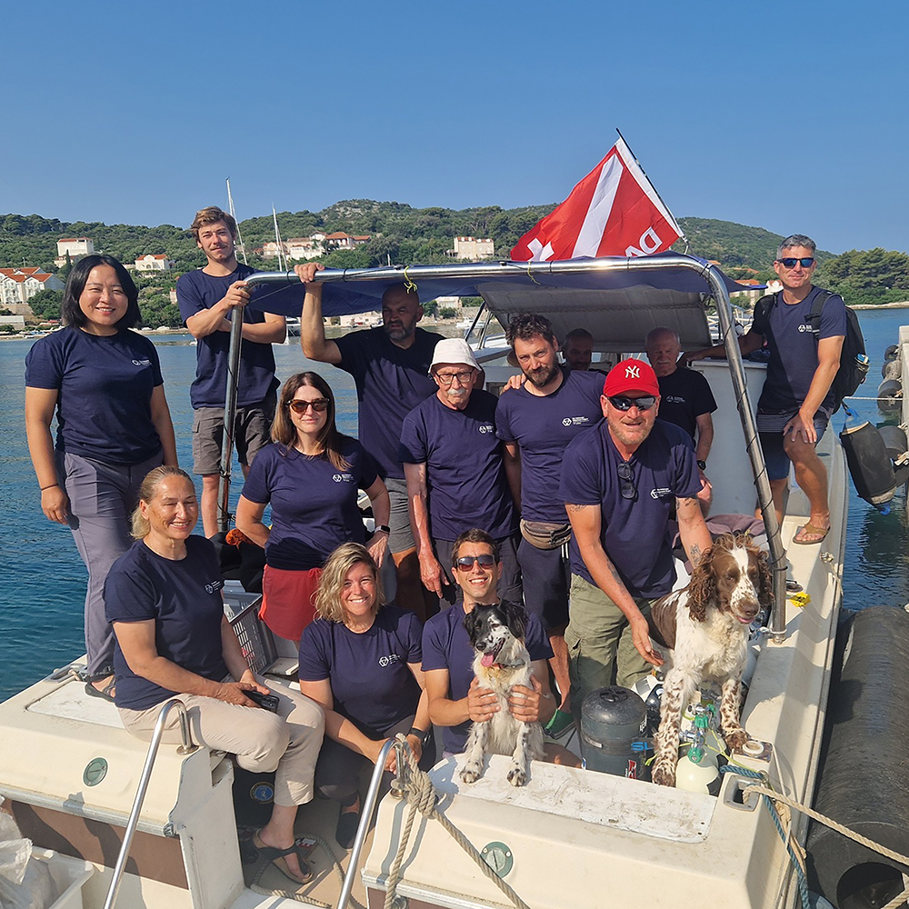
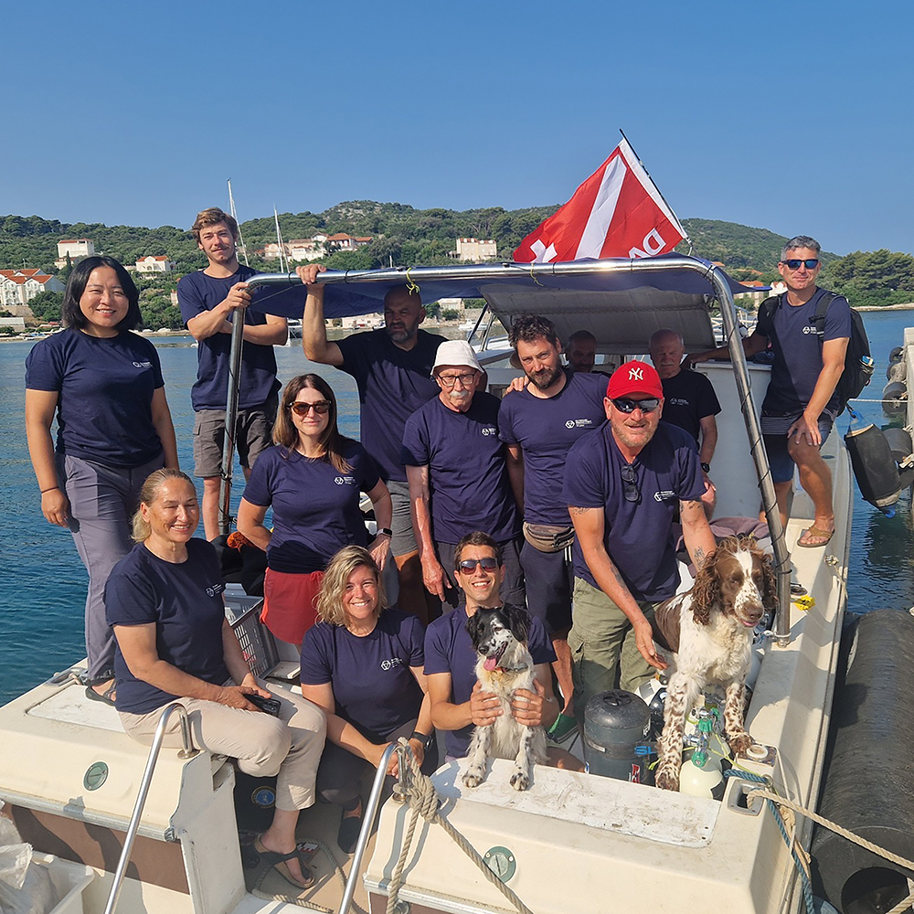

Dissertation Research
Chinese Ship Models as Cultural Translation
My current doctoral research focuses on the intersection of museum collections of early 20th century Chinese seagoing ship-models. How ship models as carriers of Cultural Translation and Western Perspectives in Scientific Records.
Research Gallery
 


Field Projects
DPAA Survey Project "25-2DK" | Denmark
Duration: June-July 2025
Focus: Second World War archaeological site investigation
Role: Underwater archaeological survey project.
Kalamota Shipwreck Project | Croatia
Duration: May-June 2025
Focus: Underwater archaeological survey and excavation
Role: Underwater archaeological survey, excavation and inventory of artifact.
Serçe Limanı Hellenistic Shipwreck | Turkey
Duration: June-August 2024
Focus: Underwater archaeological survey and excavation
Role: Underwater archaeological survey and excavation team member
Aigina Harbour City Project 2019-2023 | Greece
Duration: June-July 2022; August-September 2019
Focus: Aigina Harbour City Project
Role: Underwater archaeological survey and excavation team member
Fossae Marianae Project | Fos-sur-Mer, France
Duration: May-June 2019
Focus: Underwater archaeological survey and excavation
Role: Field school participant for MoMarch Program
Peng-Hu Islands and Green Island Survey | Taiwan
Duration: August 2022-July 2023
Focus: Comprehensive archaeological surveys of underwater cultural heritage around Taiwan's waters
Role: Research assistant conducting artifact inventory, site documentation and report assistance.
Chong-De Archaeological Site | Hualien, Taiwan
Duration: May-June 2021
Focus: Terrestrial excavation and survey of prehistoric sites
Role: Project leader conducting mapping and resurvey operations in northeastern New Taipei City